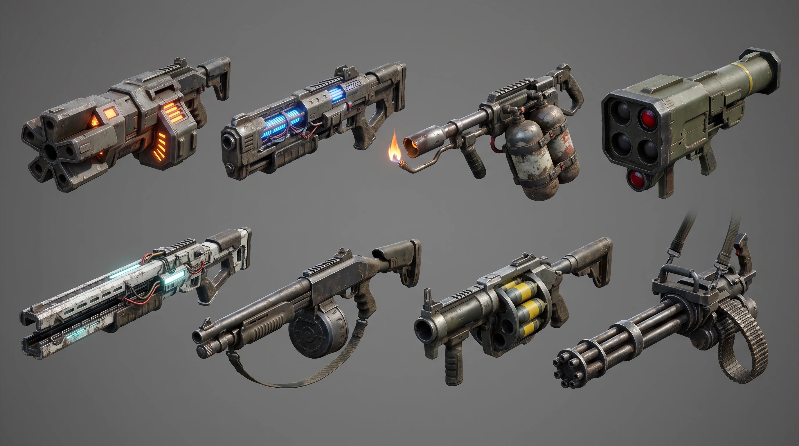
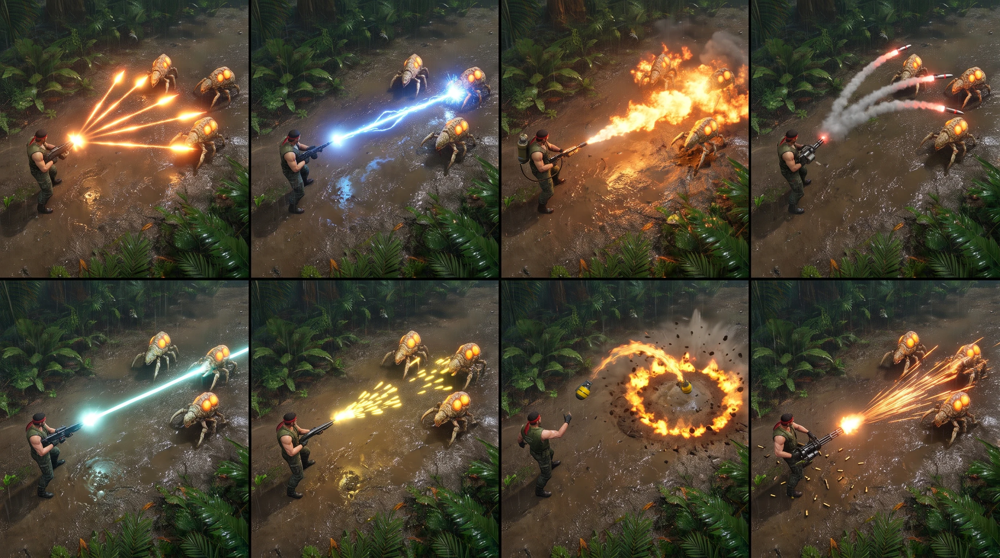
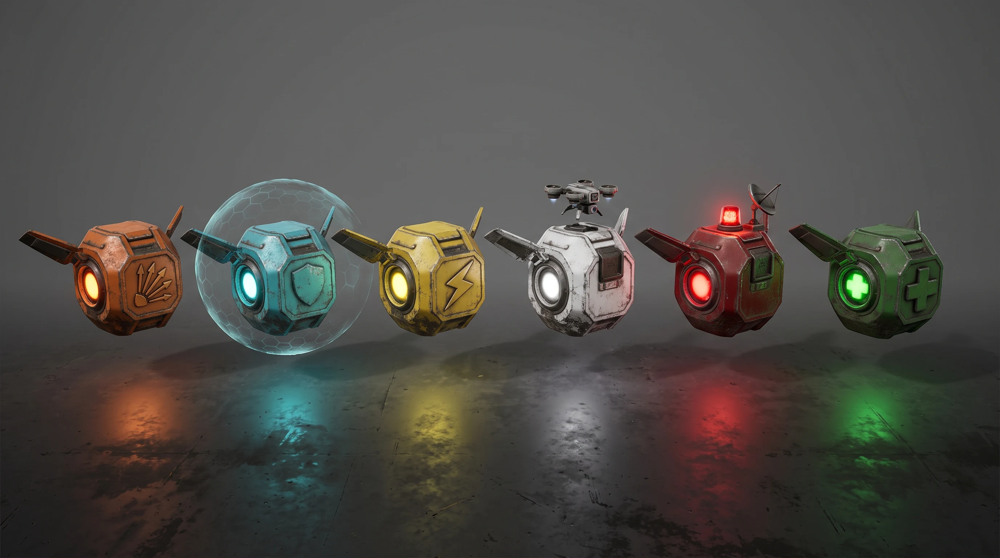
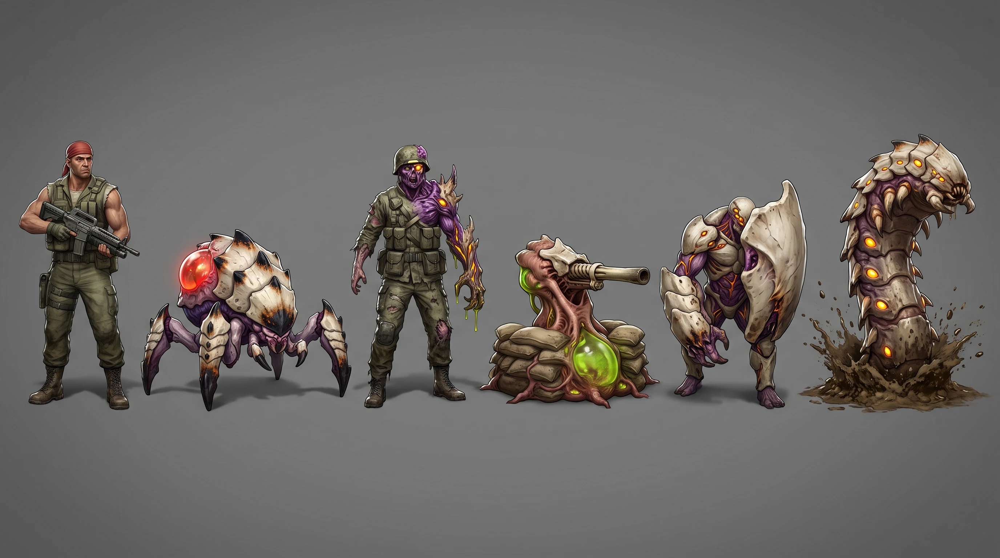
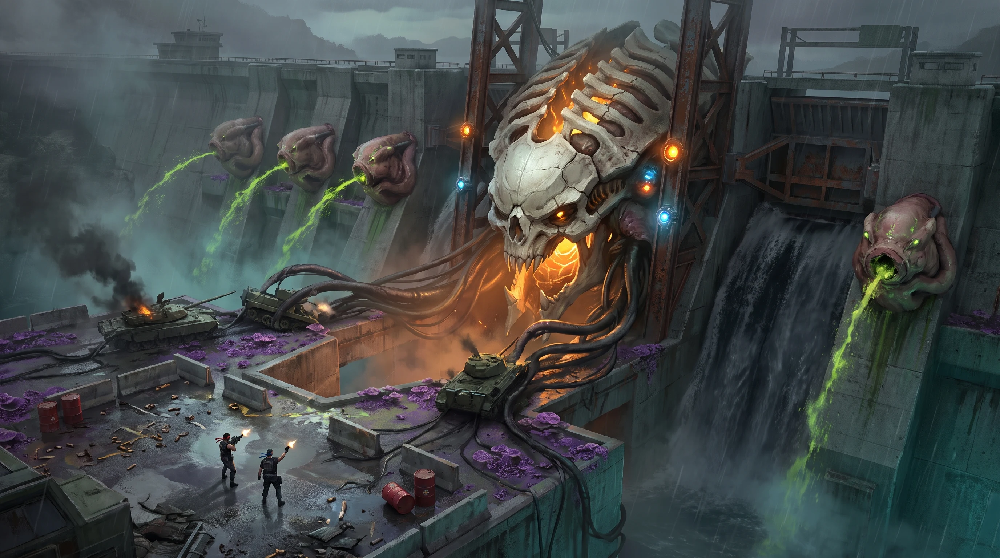
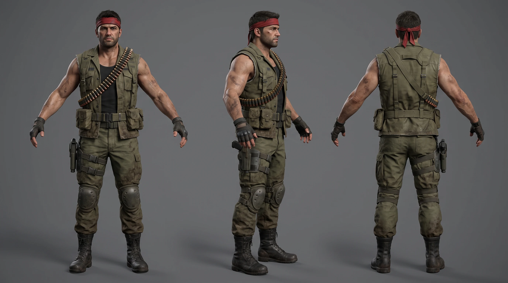
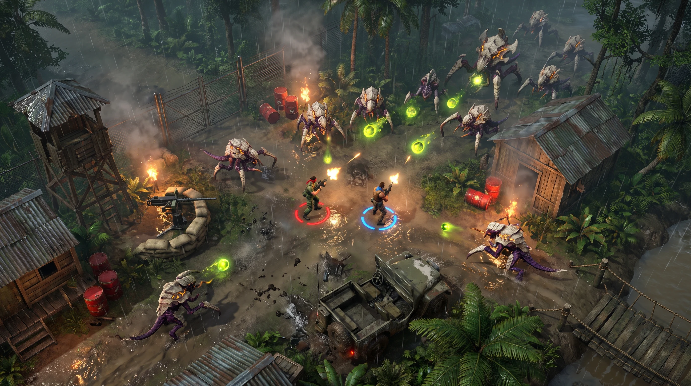
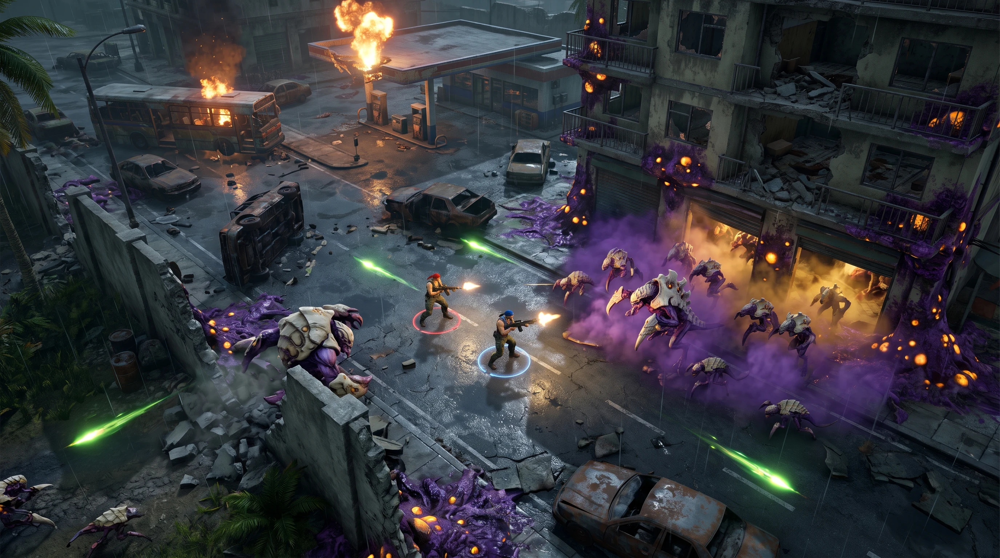
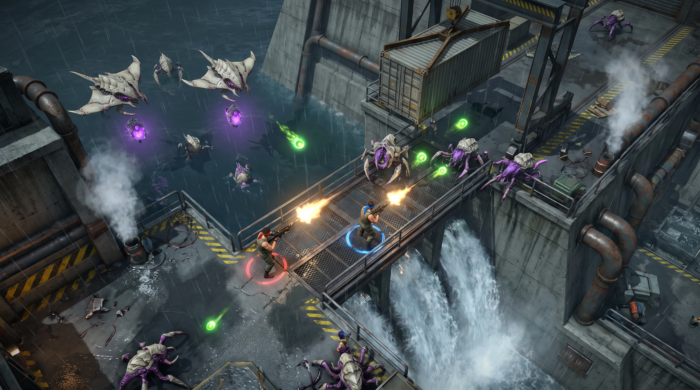
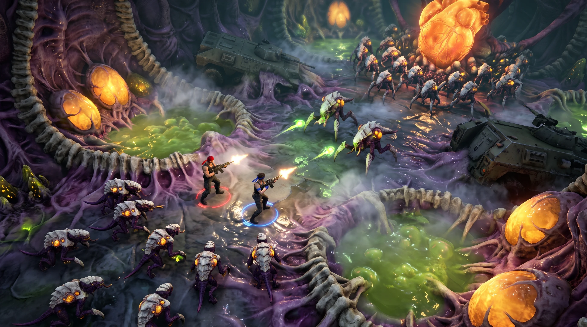

IronFall / concept art
IronFall · Concepts round 3
The content of the game in the high-fidelity direction: weapons and their fire patterns, power-ups, more enemies, a boss, the hero, and four stage themes.
Direction: high-fidelity real-time (round 2, option B). Model: Nano Banana Pro on Higgsfield, 16:9, 2K. Ten images, 20 credits observed (1,040 → 1,020). The hero sheet was added to the proposed nine as the reference for the Unity test character. Click an image to inspect it at full size and download it.
01
Weapons: eight guns
Spread, laser, flamethrower, homing missiles (top row); rail gun, shotgun, grenade launcher, minigun (bottom row)
candidate
Nano Banana Pro · job 4d97013b-b292-4db9-b939-ad192cf2b551

Download original PNG (2752 × 1536)
Prompt
Saved generation prompt
Weapon lineup concept sheet for a gritty sci-fi military action game: eight heavy two-handed guns arranged in two rows of four, side view, each clearly separated, near-future military hardware blended with 1980s action-movie bulk, each with a distinct silhouette and one colored energy accent that matches its projectile. Top row: a spread gun with a wide fan-shaped five-barrel muzzle and orange accents; a laser rifle with blue glowing coils; a flamethrower with twin fuel tanks and a pilot flame; a shoulder-fired homing missile launcher with a four-tube pod and a red tracking lens. Bottom row: a long rail gun with magnetic rails and a white-cyan glow; a pump shotgun with a drum magazine; a revolver-cylinder grenade launcher with yellow-banded grenades; a six-barrel minigun with an ammo belt. High-fidelity real-time 3D game asset render in the style of a modern AAA top-down shooter: physically based materials with wear, grime and mud, realistic adult proportions, clean readable silhouettes, plain medium-gray studio background, soft even studio lighting with a subtle rim light, subtle contact shadows, no text, no labels, no numbers, no UI, no watermark. 16:9 wide framing.
What works
- Eight distinct silhouettes that read even in shadow.
- Each gun's glow matches its shots: orange spread, blue laser, cyan rail, yellow grenades.
- Grounded 80s-military bulk with just enough sci-fi.
Issues
- The spread gun's muzzle is a ring of barrels, not a fan.
- The shotgun and grenade launcher look like real-world guns. They may need a sci-fi touch to sit beside the laser and rail gun.
02
Weapons: fire patterns in play
Each gun firing from the real gameplay camera
candidate
Nano Banana Pro · job f28a9a56-cdd5-4a88-b3d3-cee7df176ece

Download original PNG (2752 × 1536)
Prompt
Saved generation prompt
Concept sheet of eight gameplay vignettes in a grid of four columns and two rows of equal panels separated by thin dark gutters. Each panel is a real-time 3D gameplay view from a high overhead camera pitched about 65 degrees down onto wet jungle mud, showing one commando in sleeveless fatigues and a red bandana firing a different weapon at a few bone-shelled alien crawlers with glowing amber blisters. Top row, left to right: a spread gun throwing a wide fan of five glowing orange bolts; a laser rifle firing a continuous crackling blue beam; a flamethrower spraying a cone of rolling orange fire that ignites the ground; homing missiles curving on smoke trails with red tips. Bottom row, left to right: a rail gun firing a single straight white-cyan line that pierces three enemies; a shotgun blast of short yellow pellets in a tight cone; a grenade launcher lobbing a yellow-banded grenade in an arc that explodes in a ring of fire and dirt; a minigun spitting a dense stream of orange tracers with spent shell casings. High-fidelity real-time rendering, physically based materials, bloom on projectiles; each fire pattern is instantly distinguishable by shape and color. No HUD, no text, no numbers, no labels, no watermark. 16:9 wide framing.
What works
- All eight patterns are distinguishable by shape and color at gameplay scale. This is the most useful sheet for effects work.
- The flamethrower's burning ground and the grenade's fire ring show area denial.
Issues
- In the missile panel he holds a minigun, and the grenade is thrown by hand.
- The rail shot doesn't visibly pierce, and its cyan sits close to the laser's blue. Push the rail to white or violet.
- The crawlers drifted to tan shells.
03
Power-ups: six capsules
Weapon, shield, speed, drone buddy, airstrike, health
candidate
Nano Banana Pro · job 3ed47d0e-8a4d-4a5f-ae23-c03e2bead5d0

Download original PNG (2752 × 1536)
Prompt
Saved generation prompt
Power-up pickup lineup concept sheet for a gritty sci-fi military action game: six floating winged capsules in a row, three-quarter top-down view, each a rugged metal military capsule with small folding wings and a glowing core, distinguished by color and by a simple raised emblem shape rather than letters: an orange capsule with a fan-of-bolts emblem for weapon upgrade; a cyan capsule projecting a faint hexagonal shield bubble; a yellow capsule with a lightning chevron for speed; a white capsule with a tiny hovering combat drone docked on top; a red capsule with a blinking beacon and antenna for airstrike; a green capsule with a plus-shaped emblem for health. Each casts colored light on the floor beneath it. High-fidelity real-time 3D game asset render in the style of a modern AAA top-down shooter: physically based materials with wear, grime and mud, realistic adult proportions, clean readable silhouettes, plain medium-gray studio background, soft even studio lighting with a subtle rim light, subtle contact shadows, no text, no labels, no numbers, no UI, no watermark. 16:9 wide framing.
What works
- Color, emblem and floor glow make each type readable at a glance.
- The shield bubble and docked drone preview the effect before pickup.
- One shared capsule body with variants keeps the 3D work cheap.
Issues
- They read as boxy and slightly toy-like rather than gritty.
- The red airstrike competes with the red hero and red danger colors. Consider another color.
- The wings are stubby.
04
Enemies: second lineup
Commando for scale, elite crawler, infected soldier, turret growth, shield carrier, burrower
candidate
Nano Banana Pro · job 420c2b54-99e2-48cb-94b8-5cacec4d20e6

Download original PNG (2752 × 1536)
Prompt
Saved generation prompt
Second creature lineup concept sheet for an original alien biomechanical faction in a gritty sci-fi military action game. Shape language: bone-white armor plates, bruise-purple flesh and glowing amber veins, organic but engineered, avoiding insectoid humanoids and elongated heads. Left to right, each figure full body and clearly separated, three-quarter front view, in a calm readable pose: a muscular human commando in a red bandana and sleeveless fatigues for scale; an elite crawler, a knee-high six-legged tick-like creature with heavier black-tipped armor and a glowing red blister; an infected soldier, a former human soldier in torn fatigues and a helmet half-overgrown with purple flesh and bone plates, one arm mutated into an acid-dripping growth, eyes glowing amber; a turret growth, a rooted fleshy pod fused into a sandbag machine-gun nest with a bone barrel and an acid-green sac; a shield carrier, a hunched biped holding a huge curved bone plate as a shield in front of its body; and a burrower, a segmented armored worm bursting out of a patch of ground in a spray of mud. High-fidelity real-time 3D game asset render in the style of a modern AAA top-down shooter: physically based materials with wear, grime and mud, realistic adult proportions, clean readable silhouettes, plain medium-gray studio background, soft even studio lighting with a subtle rim light, subtle contact shadows, no text, no labels, no numbers, no UI, no watermark. 16:9 wide framing.
What works
- The infected soldier adds a human-shaped enemy that fits the faction.
- The turret growth shows the aliens absorbing human structures.
- The shield carrier and burrower each bring a distinct mechanic: flank it, or watch the ground.
Issues
- It's an inked illustration again, not the in-game render look.
- The elite crawler's red glow collides with the red hero and red power-up colors.
05
Boss: the dam wall
A colossal alien fused into a captured dam gate
candidate
Nano Banana Pro · job 9d3099e4-7986-40a0-baf0-b9b98fd4d820

Download original PNG (2752 × 1536)
Prompt
Saved generation prompt
Boss concept art for a gritty sci-fi military action game, elevated three-quarter view from high above to show scale: a colossal alien biomechanical boss fused into the concrete wall and steel blast gate of a captured military dam. At its center a giant bone-white armored skull-like face with a pulsing amber core behind cracked ribs; four fleshy cannon pods along the wall spit acid-green globs; tendrils drag wrecked tanks; purple fungal creep covers the concrete; spillway water roars beside it. Two tiny commandos with red and blue bandanas fire up at it from a rain-soaked concrete arena with cover blocks and explosive barrels; the boss is about thirty times their height. Several glowing weak points are readable from far away. High-fidelity real-time rendering, physically based materials, volumetric mist and spray, warm core light against cool teal shadows. No text, no HUD, no logos. 16:9 wide framing.
What works
- A modern take on the classic wall boss, with clear weak points: the core behind the ribs and the cannon pods.
- Tanks dragged by tendrils sell the scale, and the arena's cover blocks and barrels are directly usable.
Issues
- The blue lights on the gate frame are unexplained.
- The real fight happens under the gameplay camera, which can't show the whole boss. It needs a gameplay-camera version.
06
Hero: red commando sheet
Front, three-quarter and back views in an A-pose
candidate
Nano Banana Pro · job 4300ef97-362f-4c4d-8838-94fa50999121

Download original PNG (2752 × 1536)
Prompt
Saved generation prompt
Character model sheet of a commando hero for a modern 3D top-down shooter: the same man in three full-body views side by side, front, side profile and back, standing in a relaxed A-pose with arms slightly away from the body, on a plain medium-gray background with soft even studio lighting. A muscular battle-hardened man in his thirties with short dark hair and stubble, a red bandana tied around the forehead with long tails, a sleeveless olive drab fatigue vest over a black tank top, an ammo bandolier across the chest, tactical webbing with pouches, fingerless gloves, olive cargo pants with knee pads, black combat boots and a holstered sidearm. Realistic adult proportions, high-fidelity real-time game character, physically based materials with mud and wear, identical design in all three views, empty hands, no weapon held. No text, no labels, no watermark. 16:9 wide framing.
What works
- Consistent across views, with a believable 80s action hero.
- The A-pose suits rigging. This is the starting reference for the Unity test character.
Issues
- The middle view is three-quarter, not a strict side profile.
- As modeling input, we'd make a strict front, side and back set with the character-sheet skill.
07
Stages: four themes
Jungle outpost, infested city, dam and waterfall, hive interior
candidate
Nano Banana Pro · job 9209269d-9902-41c5-bd60-a6c166ec586a

Download original PNG (2752 × 1536)
Prompt
Saved generation prompt
Real-time 3D gameplay screenshot of a modern high-end PC and console top-down shooter. High overhead gameplay camera pitched about 65 degrees down; the ground fills the entire frame with no sky and no horizon. Characters are small, each about one fifteenth of the frame height, with open ground around them so the action reads clearly. High-fidelity real-time rendering: physically based materials, dynamic shadows, volumetric smoke and fog, wet reflective surfaces, detailed physics debris, film-like color grade. Keep the playfield readable: no area darker than deep shadow, enemies picked out by rim light. Stage theme: jungle outpost. Two commandos in sleeveless fatigues, one with a red bandana and one with a blue bandana, each with a faint ring of light on the ground beneath them matching their bandana color, fight side by side. They push through a jungle firebase full of interactive elements: a mounted heavy machine gun on a sandbag nest that a player can use, a drivable military jeep, red explosive fuel barrels, a wooden watchtower that can be shot down, a chain-link gate, destructible wooden huts with corrugated roofs, and a muddy river crossing with a rope bridge. Crawlers and a spitter of the alien biomechanical faction with bone-white armor plates, bruise-purple flesh, glowing amber veins and weak points, and purple fungal creep attack from the tree line. Rain, flickering fire light, mist. Enemy projectiles are glowing acid-green orbs. Only the two commandos are human; no other people. No HUD, no text, no logos.
Nano Banana Pro · job 28bd8efa-6cb4-463a-b9a2-1a13acec381b

Download original PNG (2752 × 1536)
Prompt
Saved generation prompt
Real-time 3D gameplay screenshot of a modern high-end PC and console top-down shooter. High overhead gameplay camera pitched about 65 degrees down; the ground fills the entire frame with no sky and no horizon. Characters are small, each about one fifteenth of the frame height, with open ground around them so the action reads clearly. High-fidelity real-time rendering: physically based materials, dynamic shadows, volumetric smoke and fog, wet reflective surfaces, detailed physics debris, film-like color grade. Keep the playfield readable: no area darker than deep shadow, enemies picked out by rim light. Stage theme: infested city ruins. Two commandos in sleeveless fatigues, one with a red bandana and one with a blue bandana, each with a faint ring of light on the ground beneath them matching their bandana color, fight side by side. They fight down a rubble-filled street of a collapsed tropical port city: cracked asphalt, an overturned bus and burned cars used as cover, a gas station mid-explosion, a half-collapsed apartment block with exposed floors, and toppled burning streetlights. Purple creep of the alien biomechanical faction with bone-white armor plates, bruise-purple flesh, glowing amber veins and weak points, and purple fungal creep covers the walls with glowing amber egg sacs; crawlers pour out of a broken storefront and a hulking shelled brute smashes through a wall. Enemy projectiles are glowing acid-green orbs. Only the two commandos are human; no other people. No HUD, no text, no logos.
Nano Banana Pro · job a20b89bd-3bcd-4abf-b2d6-bb21412321cb

Download original PNG (2752 × 1536)
Prompt
Saved generation prompt
Real-time 3D gameplay screenshot of a modern high-end PC and console top-down shooter. High overhead gameplay camera pitched about 65 degrees down; the ground fills the entire frame with no sky and no horizon. Characters are small, each about one fifteenth of the frame height, with open ground around them so the action reads clearly. High-fidelity real-time rendering: physically based materials, dynamic shadows, volumetric smoke and fog, wet reflective surfaces, detailed physics debris, film-like color grade. Keep the playfield readable: no area darker than deep shadow, enemies picked out by rim light. Stage theme: dam and waterfall. Two commandos in sleeveless fatigues, one with a red bandana and one with a blue bandana, each with a faint ring of light on the ground beneath them matching their bandana color, fight side by side. They fight across the top of a concrete hydroelectric dam: steel catwalks over a roaring spillway, a gantry crane carrying a shipping container that can be dropped, breakable floodgates, rusted pipes venting steam, yellow warning stripes, rain and spray mist. Manta-like flyers of the alien biomechanical faction with bone-white armor plates, bruise-purple flesh, glowing amber veins and weak points, and purple fungal creep swoop in dropping glowing spore pods, and crawlers climb over the railings. Enemy projectiles are glowing acid-green orbs. Only the two commandos are human; no other people. No HUD, no text, no logos.
Nano Banana Pro · job f59cc764-c7d3-4447-af6f-849c6be3f319

Download original PNG (2752 × 1536)
Prompt
Saved generation prompt
Real-time 3D gameplay screenshot of a modern high-end PC and console top-down shooter. High overhead gameplay camera pitched about 65 degrees down; the ground fills the entire frame with no sky and no horizon. Characters are small, each about one fifteenth of the frame height, with open ground around them so the action reads clearly. High-fidelity real-time rendering: physically based materials, dynamic shadows, volumetric smoke and fog, wet reflective surfaces, detailed physics debris, film-like color grade. Keep the playfield readable: no area darker than deep shadow, enemies picked out by rim light. Stage theme: hive interior. Two commandos in sleeveless fatigues, one with a red bandana and one with a blue bandana, each with a faint ring of light on the ground beneath them matching their bandana color, fight side by side. They advance through a vast organic cavern inside the alien hive: ground of ribbed bone and purple flesh, pulsing membrane walls that can burst, pools of glowing acid-green fluid, clusters of glowing amber egg sacs, bioluminescent veins as the main light source, and the wreckage of swallowed military vehicles half-absorbed into the walls. Crawlers and spitters of the alien biomechanical faction with bone-white armor plates, bruise-purple flesh, glowing amber veins and weak points, and purple fungal creep defend a giant pulsing amber heart at the far edge of the playfield. Enemy projectiles are glowing acid-green orbs. Only the two commandos are human; no other people. No HUD, no text, no logos.
What works
- The colored ground rings solve hero identification. Keep them.
- Outpost: every requested interactive element is present and readable: mounted gun, jeep, barrels, watchtower, fence, huts, rope bridge.
- City: a strong cover layout, a set-piece gas station explosion, and a brute smashing through a wall to show destructible walls.
- Dam: vertical layers (a catwalk over the spillway, a crane container drop) make it the most distinct stage.
- Hive: the most atmospheric, with a clear objective in the amber heart.
Issues
- Enemy designs drift between images. Crawlers become tall insect bipeds, and the flyers lose their glowing membranes.
- City: acid shots became green streaks, and the amber egg sacs look like enemy weak points.
- Dam: an extra small human figure appears at bottom center, and no floodgates are visible.
- Hive: the acid pools match the enemy shots' green, so fire would vanish over the pools. One of the two colors must change.
- The outpost's top edge is very dark.
What round 3 teaches
- Color language works: heroes in red and blue with ground rings, player fire warm or blue, enemy fire acid green, alien weak points amber. Keep red away from enemies and power-ups, and green away from scenery.
- Prompts can't hold a design: the same crawler text gives different creatures in different scenes. Before production, each enemy needs a locked model sheet or 3D model, and later images should use those as references.
- The content list is ready to confirm: 8 weapons, 6 power-ups, 10 enemy types, one boss and 4 stages. It's recorded in the project brief.